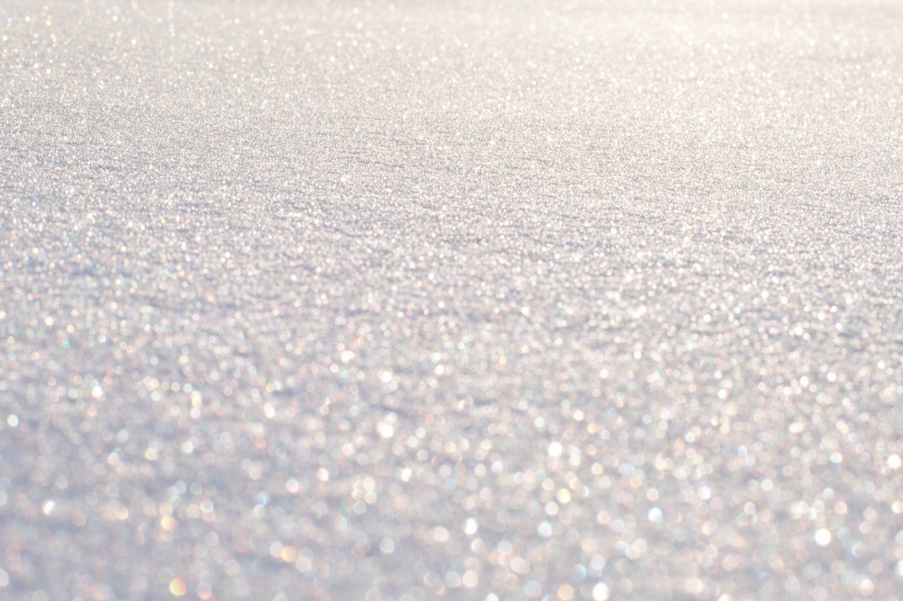
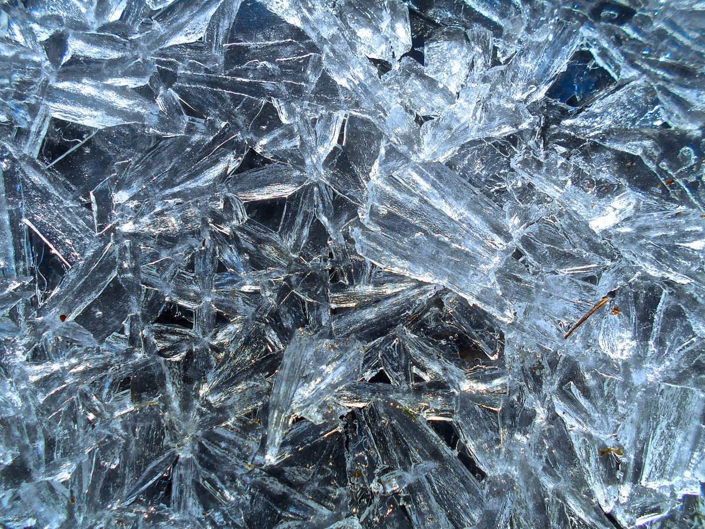
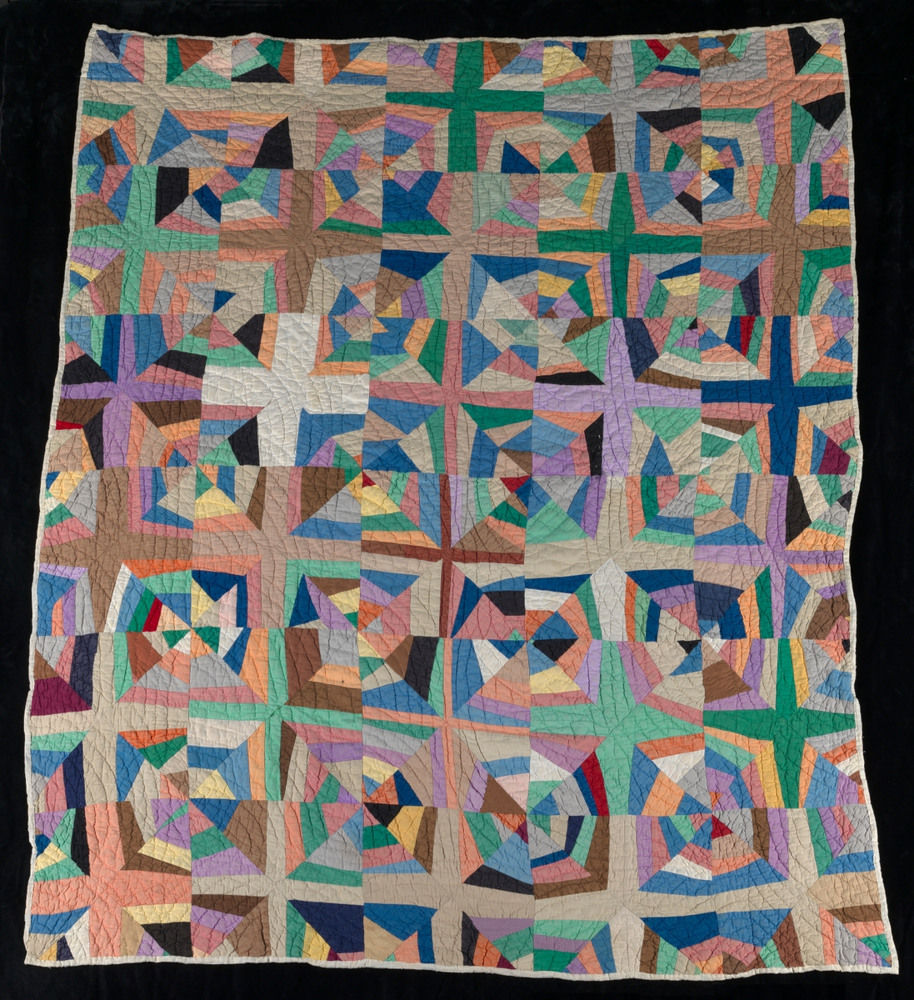

˝˝<!DOCTYPE html>
<html lang="en">
<head>
    <meta charset="UTF-8">
    <title>PA4 – A-Frame – 240137</title>
    <link rel="icon" href="data:,">
    <script src="https://aframe.io/releases/1.8.0/aframe.min.js"></script>
    <script src="components.js"></script>
</head>
<body>
    <a-scene fog="type: exponential; density: 0.03; color: #cfe3f7"
    cursor="rayOrigin: mouse" raycaster="objects: .exhibit, .exhibit *" stats>
    <a-assets>
        
        
        
        </a-assets>

        <!--environment - sky, ground, lights-->
        <a-plane id="ground" width="100" height="100" rotation="-90 0 0" x0137-texture="src: #snow; repeat: 10 10; anisotropy: 8"></a-plane>
        <a-sky color="#cfe3f7"></a-sky>
        <a-entity light="type: ambient; color: #dde8f5; intensity: 1.0"></a-entity>
        <a-entity light="type: directional; color: #fff6e8; intensity: 1.3" position="-2 4 2"></a-entity>
        <!--camera rig-->
        <a-entity id="rig" wasd-controls>
            <a-entity camera look-controls position="0 1.6 0"></a-entity>
            <a-entity laser-controls="hand: left" raycaster="objects: .exhibit, .exhibit *; far: 20"></a-entity>
            <a-entity laser-controls="hand: right" raycaster="objects: .exhibit, .exhibit *; far: 20"></a-entity>
        </a-entity>

        <!-- six exhibits: ring, radius 4 m, around the start point, each facing the centre -->
         <a-entity class="exhibit" position="0 0.2 -4" rotation="0 0 0" x0137-motion="phase: 0" x0137-exhibit="name: Yurt; info: Kiyz uy, the felt home of nomad families on the winter steppe.">
            <a-cylinder radius="0.8" height="0.9" position="0 0.45 0" x0137-texture="src: #quilt; repeat: 6 1"></a-cylinder>
            <a-cone radius-bottom="0.9" radius-top="0.15" height="0.6" position="0 1.2 0" color="#8b5a3c"></a-cone>
            <a-box width="0.35" height="0.6" depth="0.05" position="0 0.3 0.8" color="#b23a2a"></a-box>
        </a-entity>

        <a-entity class="exhibit" position="3.464 0.2 -2" rotation="0 -60 0" x0137-motion="phase: 1.05" x0137-exhibit="name: Snowman; info: Aqqala, built in every village after the first snow.">
            <a-sphere radius="0.4" position="0 0.4 0" color="#ffffff"></a-sphere>
            <a-sphere radius="0.3" position="0 1.0 0" color="#ffffff"></a-sphere>
            <a-sphere radius="0.2" position="0 1.45 0" color="#ffffff"></a-sphere>
            <a-cone radius-bottom="0.04" radius-top="0" height="0.2" position="0 1.45 0.28" rotation="90 0 0" color="#e8731c"></a-cone>
        </a-entity>

        <a-entity class="exhibit" position="3.464 0.2 2" rotation="0 -120 0" x0137-motion="phase: 2.09" x0137-exhibit="name: Snowy spruce; info: An evergreen that keeps its needles through -40 degree winters.">
            <a-cylinder radius="0.1" height="0.4" position="0 0.2 0" color="#6b4a2b"></a-cylinder>
            <a-cone radius-bottom="0.6" radius-top="0" height="0.9" position="0 0.85 0" color="#2f5d3a"></a-cone>
            <a-cone radius-bottom="0.4" radius-top="0" height="0.6" position="0 1.3 0" color="#2f5d3a"></a-cone>
            <a-cone radius-bottom="0.2" radius-top="0" height="0.25" position="0 1.6 0" color="#ffffff"></a-cone>
        </a-entity>

        <!-- generic entity with geometry and material components -->
        <a-entity class="exhibit" position="0 0.9 4" rotation="0 180 0"
                    geometry="primitive: octahedron; radius: 0.6"
                    material="color: #ffffff"
                    x0137-texture="src: #ice"
                    x0137-motion="phase: 3.14"
                    x0137-exhibit="name: Frost crystal; info: Frost grows into crystals on still steppe nights below -30 degrees."></a-entity>
        <a-entity class="exhibit" position="-3.464 0.2 2" rotation="0 120 0"
                    x0137-motion="phase: 4.19"
                    x0137-exhibit="name: Balbal; info: A Turkic stone figure standing on the open steppe.">
            <a-box width="0.5" height="1.1" depth="0.35" position="0 0.55 0" color="#8a8a85"></a-box>
            <a-sphere radius="0.22" position="0 1.3 0" color="#8a8a85"></a-sphere>
        </a-entity>

        <a-entity class="exhibit" position="-3.464 0.2 -2" rotation="0 60 0"
                    x0137-motion="phase: 5.24"
                    x0137-exhibit="name: Haystack; info: Winter feed for horses that graze under the snow.">
            <a-cylinder radius="0.6" height="0.5" position="0 0.25 0" color="#c9a74a"></a-cylinder>
            <a-cone radius-bottom="0.6" radius-top="0" height="0.6" position="0 0.8 0" color="#d6b85a"></a-cone>
            <a-cone radius-bottom="0.3" radius-top="0" height="0.2" position="0 1.0 0" color="#ffffff"></a-cone>
        </a-entity>

        <!-- info panel -->
         
</body>